Python Language | |
| 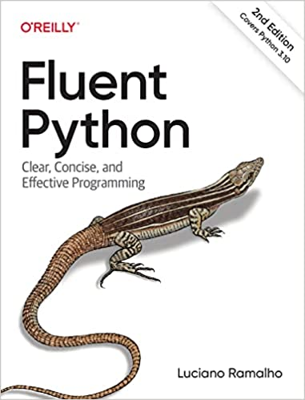 |
Fluent Python
Luciano Ramalho, 2nd ed, 2022 Highly recommended. If you want to become an expert in Python, or you're coming from another programming language, read this book! Python’s simplicity lets you become productive quickly, but often this means you aren’t using everything it has to offer. With the updated edition of this hands-on guide, you’ll learn how to write effective, modern Python 3 code by leveraging its best ideas. View on Amazon Github code |
| 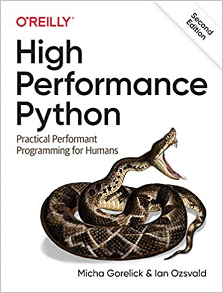 |
High Performance Python
Gorelick and Ozsvald, 2nd ed, 2020 Your Python code may run correctly, but you need it to run faster. How can you take advantage of multicore architectures or clusters? Or build a system that can scale up and down without losing reliability? Experienced Python programmers and students alike will learn concrete solutions to these and other issues, along with war stories from companies that use high-performance Python for social media analytics, productionized machine learning, and other situations. View on Amazon Github code |
| 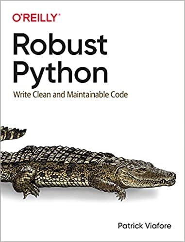 |
Robust Python
Patrick Viafore, 2021 Does it seem like your Python projects are getting bigger and bigger? Are you feeling the pain as your codebase expands and gets tougher to debug and maintain? Python is an easy language to learn and use, but that also means systems can quickly grow beyond comprehension. Thankfully, Python has features to help developers overcome maintainability woes. View on Amazon |
Python Machine Learning | |
| 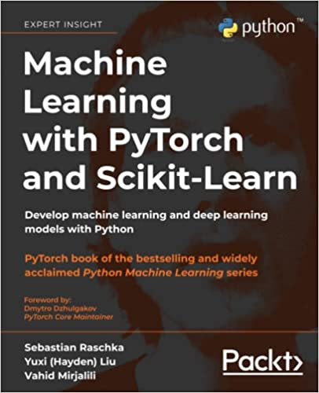 |
Machine Learning with PyTorch and Scikit-Learn
Sebastian Raschka, 2022 Machine Learning with PyTorch and Scikit-Learn is a comprehensive guide to machine learning and deep learning with PyTorch. It acts as both a step-by-step tutorial and a reference you'll keep coming back to as you build your machine learning systems. PyTorch is the Pythonic way to learn machine learning, making it easier to learn and simpler to code with. This book explains the essential parts of PyTorch and how to create models using popular libraries, such as PyTorch Lightning and PyTorch Geometric. View on Amazon Github code |
| 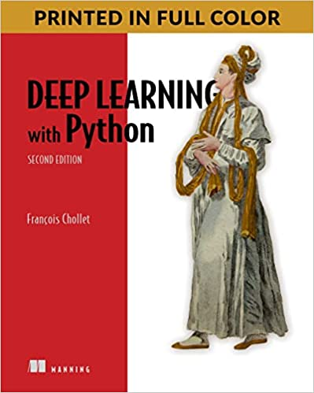 |
Deep Learning with Python
François Chollet, 2nd ed, 2022 Deep Learning with Python introduces the field of deep learning using the Python language and the powerful Keras library. You’ll learn directly from the creator of Keras, François Chollet, building your understanding through intuitive explanations and practical examples. You'll explore challenging concepts and practice with applications in computer vision, natural-language processing, and generative models. By the time you finish, you'll have the knowledge and hands-on skills to apply deep learning in your own projects. View on Amazon Github code |
| 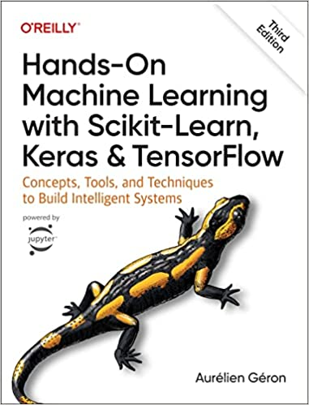 |
Hands-On Machine Learning with Scikit-Learn, Keras, and TensorFlow
Aurelien Geron, 3rd ed, 2022 This best-selling book uses concrete examples, minimal theory, and production-ready Python frameworks--scikit-learn, Keras, and TensorFlow--to help you gain an intuitive understanding of the concepts and tools for building intelligent systems. View on Amazon Github code |
| 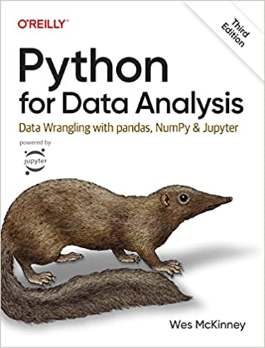 |
Python for Data Analysis
Wes McKinney, 3rd ed, 2022 Get the definitive handbook for manipulating, processing, cleaning, and crunching datasets in Python. You'll learn the latest versions of pandas, NumPy, and Jupyter. It's ideal for analysts new to Python and for Python programmers new to data science and scientific computing. View on Amazon Github code |
Freely Available Books | |
| 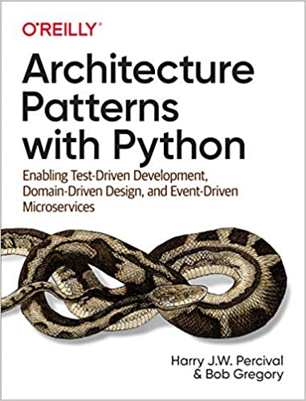 |
Architecture Patterns with Python
Harry Percival, 2020 (free) With this practical guide, Harry Percival and Bob Gregory from MADE.com introduce proven architectural design patterns to help Python developers manage application complexity. Each pattern is illustrated with concrete examples in idiomatic Python that explain how to avoid some of the unnecessary verbosity of Java and C# syntax. You'll learn how to implement each of these patterns in a Pythonic way. Github code |
| 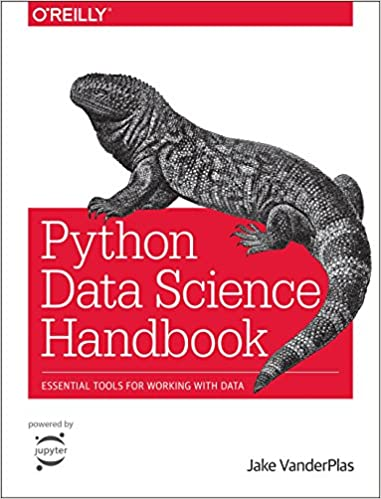 |
Python Data Science Handbook
Jake Vanderplas, 1st ed, 2016 (free) The linked website contains the full text of the Python Data Science Handbook (1st ed); the code is available on GitHub in the form of Jupyter notebooks. Note that the 2nd edition is available towards the end of 2022. Github code |
| 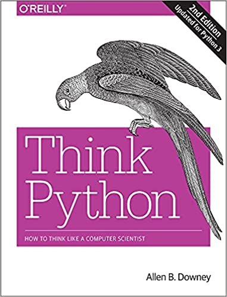 |
Think Python
Allen Downey, 2nd ed, 2015 (free) Think Python is an introduction to Python programming for beginners. It starts with basic concepts of programming; it is carefully designed to define all terms when they are first used and to develop each new concept in a logical progression. Larger pieces, like recursion and object-oriented programming, are divided into a sequence of smaller steps and introduced over the course of several chapters. Github code |
| 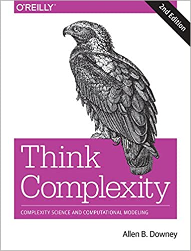 |
Think Complexity
Allen Downey, 2nd ed, 2018 (free) Complexity science uses computation to explore the physical and social sciences. In Think Complexity, you'll use graphs, cellular automata, and agent-based models to study topics in physics, biology, and economics. Whether you're an intermediate-level Python programmer or a student of computational modeling, you'll delve into examples of complex systems through a series of worked examples and case studies. Github code |
| 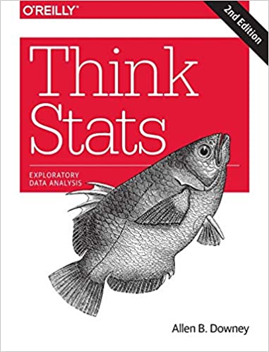 |
Think Stats
Allen Downey, 2nd ed, 2014 (free) If you know how to program, you have the skills to turn data into knowledge, using tools of probability and statistics. This concise introduction shows you how to perform statistical analysis computationally, rather than mathematically, with programs written in Python. Github code |
| 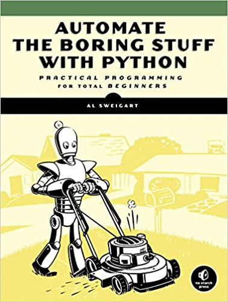 |
Automate the Boring Stuff
Al Sweigart, 2017 (free) In Automate the Boring Stuff with Python, you'll learn how to use Python to write programs that do in minutes what would take you hours to do by hand. Once you've mastered the basics, you'll create Python programs that effortlessly perform useful and impressive feats of automation. |
Other (Non-Python) Recommended Books | |
| 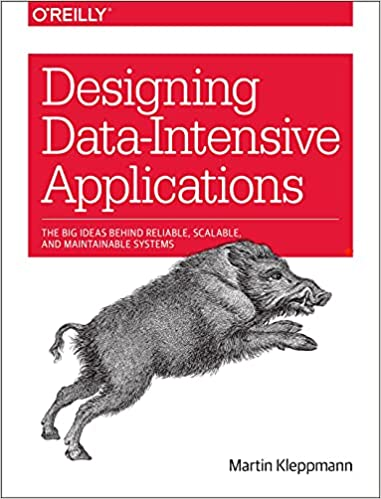 |
Designing Data-Intensive Applications: Big Ideas Behind Reliable, Scalable, and Maintainable Systems
Martin Kleppmann, 2017 Data is at the center of many challenges in system design today. Difficult issues need to be figured out, such as scalability, consistency, reliability, efficiency, and maintainability. Martin Kleppmann helps you navigate this diverse landscape by examining the pros and cons of various technologies for processing and storing data. View on Amazon |
| 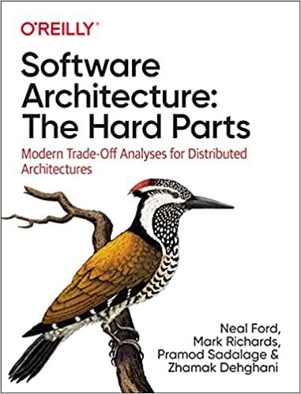 |
Software Architecture: The Hard Parts
Neal Ford et al, 2021 There are no easy decisions in software architecture. Instead, there are many hard parts--difficult problems or issues with no best practices--that force you to choose among various compromises. With this book, you'll learn how to think critically about the trade-offs involved with distributed architectures. View on Amazon |
| 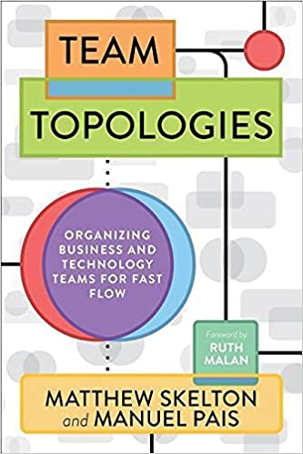 |
Team Topologies: Organizing Business and Technology Teams for Fast Flow
Matthew Skelton, 2019 Team Topologies is a practical, step-by-step, adaptive model for organizational design and team interaction based on four fundamental team types and three team interaction patterns. It is a model that treats teams as the fundamental means of delivery, where team structures and communication pathways are able to evolve with technological and organizational maturity. View on Amazon |